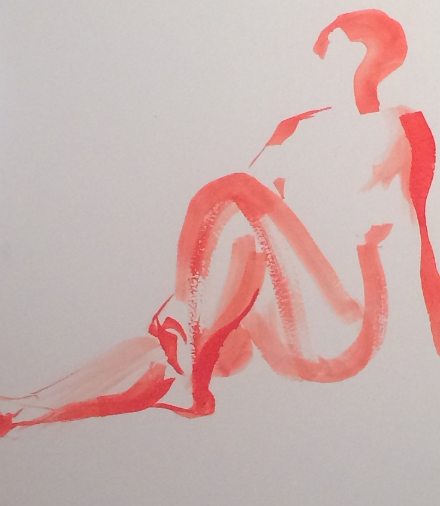

Artwork
Artwork 

I was born in Baltimore, MD and have moved around the US ever since. Now I'm in Portland for the forseeable future, which, admittedly, isn't terribly far into the future these days.
I've spent my entire career both in and out of school oscillating between artwork and programming as The Plan for what I thought I'd be doing for the rest of my life, switching from one to the other as either I hit another wall trying to teach myself to code note: disappearing into a cave for days at a time and dedicating the entirity of one's life and attention to learning a new skill does not work as well as one might expect or getting another look at what sort of connections and sheer, blind luck are required to break into the art world deep enough to make a living at it.
Between both extremes and a string of odd jobs and freelance work I was informed that code bootcamps existed as an in between step from going 50 grand in debt for another try at university and becoming a digital monk. And not the sort that knows kung fu.